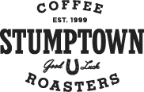

Mon-Fri: 6am - 6pm; Sat & Sun: 7am - 6pm
(360) 694-7500
602 N. Devine Road
River Maiden is driven by a singular focus: provide Vancouver with the highest quality coffee experience possible.
We live here; we work here; we love it here. We appreciate being next to Portland and all it has to offer, but we know Vancouver has it’s own take on living and lifestyle. This is where good people work hard to live well. Since 2002, we’ve been proud to serve you.
River Maiden is the only coffee house in the world that carries over ten varieties of Stumptown on the famed Clover Vacuum Press. In fact, there are less than 80 Clovers in the entire United States in private hands. Its unique combination of parameter control and coffee technology extract delicate nuances that no other brewing method can reproduce. If you enjoy coffee, you must visit our Devine Coffee House and experience coffee in high definition.
Whether you enjoy Italian classics (espresso, macchiatos, or cappuccinos) or modern American interpretations (lattes, mochas, or cold brew), River Maiden's skilled baristas are committed to doing just one thing - execute great coffee at the highest level, every time.
To make the best, you have to start with the best, so we do - Stumptown Coffee Roasters (www.stumptowncoffee.com). Many consider them the world’s finest roaster and they are just ten miles from our cafes. Pioneers in Direct Trade coffee, they source it and roast it better than anyone. We get it freshly roasted twice a week to ensure optimum flavor and espresso profiles.
Great coffee deserves a great accompaniment. We’ve got some of the best—Nuvrei Pastries. Renowned pastry chef Marius Pop and his team provide us their French classics (croissants, brioches), as well as their interpretations on modern American café fare (scones, muffins and cookies).
take picture of menu//take one home??
All merchandise only available for purchase in-store
Take pictures of interior/products
image, descritpion, price